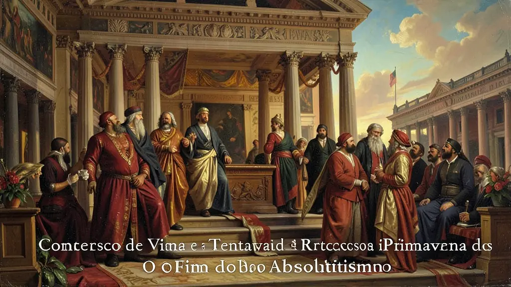
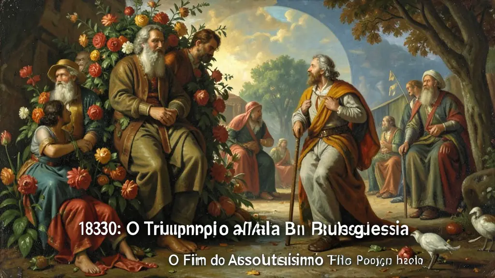
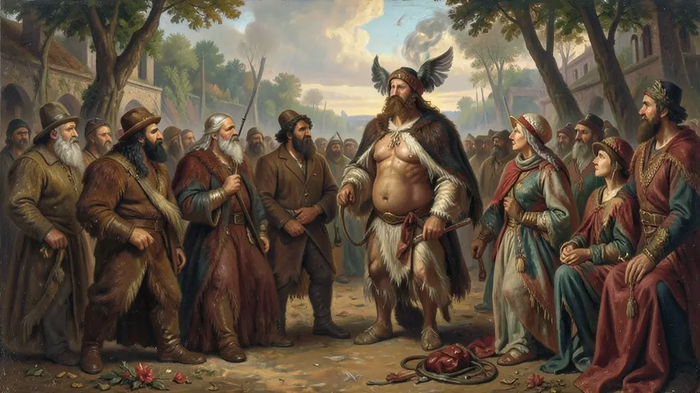

Capítulo 01
1. Congresso de Viena e a Tentativa de Retrocesso
Os reis da Áustria, Rússia e Prússia queriam apagar a Revolução Francesa. Eles criaram a Santa Aliança para sufocar revoltas em qualquer lugar da Europa. No entanto, a burguesia agora tinha o dinheiro (indústria) e não aceitava mais as amarras da nobreza. Essa tensão entre a 'velha ordem' e a 'nova economia' foi o combustível de todas as barricadas do século XIX.

Capítulo 02
2. 1830: O Triunfo da Alta Burguesia
Em Paris, o 'rei burguês' Luís Filipe de Orléans assumiu o trono após três dias de luta nas ruas. A aristocracia de sangue perdeu para a aristocracia do dinheiro. A burguesia conquistou o direito de voto (censitário), mas deixou o povo operário de fora. Essa exclusão foi o fermento para o ódio social que explodiria 18 anos depois.

Capítulo 03
3. 1848: A Primavera dos Povos e o Medo Vermelho
O ano de 1848 foi o mais incendiário da história europeia. Em meio a uma crise agrícola e fome, revoltas explodiram simultaneamente em dezenas de cidades, de Paris a Berlim, de Viena a Roma. Pela primeira vez, as bandeiras vermelhas do socialismo apareceram nas ruas. A burguesia, assustada com a radicalização dos pobres, preferiu fazer acordos com os militares conservadores para restaurar a ordem.

Capítulo 04
4. Nacionalismo: O Despertar das Nações
Em 1848, povos que viviam divididos ou sob controle de impérios estrangeiros começaram a lutar pela sua unificação. Na Alemanha, o parlamento de Frankfurt tentou criar um país unido; na Itália, heróis como Garibaldi começaram a sonhar com Roma. O nacionalismo tornou-se a nova 'religião' laica, onde o povo não jurava mais fidelidade ao Rei, mas à Pátria.
Capítulo 05
5. O Legado: Constituições e Parlamento
Mesmo com a volta de imperadores como Napoleão III, a política mundial mudou. O sufrágio universal masculino tornou-se uma meta, e as constituições limitaram para sempre o arbítrio real. O século XIX terminou com o triunfo do Estado Liberal-Burguês, pavimentando o caminho para a democracia representativa que conhecemos hoje.
O ciclo de revoluções liberais que varreu a Europa entre 1830 e 1848 representou o fim definitivo da tentativa de restauração absolutista arquitetada no Congresso de Viena. Em 1830, a revolta em Paris consagrou a vitória da alta burguesia, limitando o poder real por meio de uma monarquia constitucional que beneficiava apenas os detentores de capital (voto censitário), frustrando abertamente as camadas populares que participaram das barricadas com o derramamento de seu sangue.
Contudo, o marco incontestável de ruptura foi a 'Primavera dos Povos' em 1848. Como avalia Eric Hobsbawm, essa onda revolucionária simultânea — atingindo de Paris a Viena — inseriu pela primeira vez a classe operária como protagonista social autônoma. Sob o impacto inicial das ideias socialistas e da difusão do Manifesto Comunista de Marx e Engels, 1848 expôs a ruptura entre os princípios liberais burgueses (defesa incondicional da propriedade e da ordem) e os anseios do novo proletariado por garantias laborais e auxílio estatal contra o pauperismo.
Para o candidato do Enem, as Revoluções de 1848 são o caldeirão onde se forjaram as ideologias do século XIX e XX. Elas evidenciaram que a burguesia, diante do 'espectro do comunismo', tenderia a aliar-se com forças militares e conservadoras para estancar radicalismos populares. Ademais, 1848 acendeu irreversivelmente a pólvora do nacionalismo (Itália, Alemanha e impérios multinacionais), provando que o conceito de 'nação' substituiria o 'rei' como agente legitimador do poder político.
Fonte: HOBSBAWM, Eric. A Era das Revoluções (1789-1848). Rio de Janeiro: Paz e Terra, 2012.
Atividades interativas
Questões para fixar
O ano de 1848 ficou conhecido como 'Primavera dos Povos'. Qual foi o principal fator que diferenciou as revoluções desse ano em relação às de 1830?
A crise agrícola e a fome no continente europeu foram as causas imediatas da eclosão da Primavera dos Povos. Esse movimento foi guiado por dois grandes ideais políticos do século XIX. Quais eram eles?